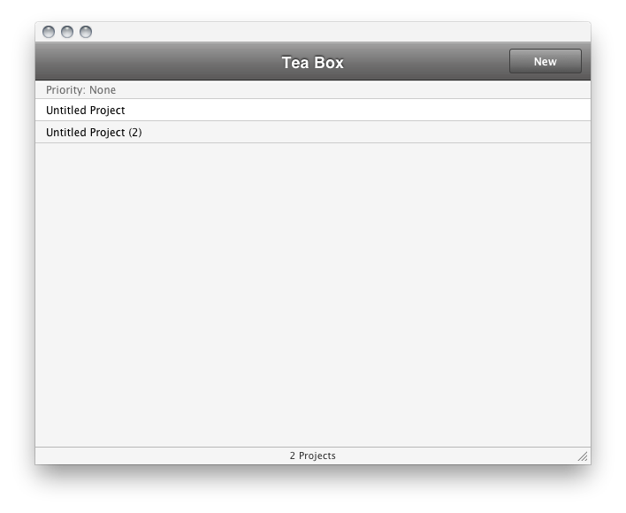
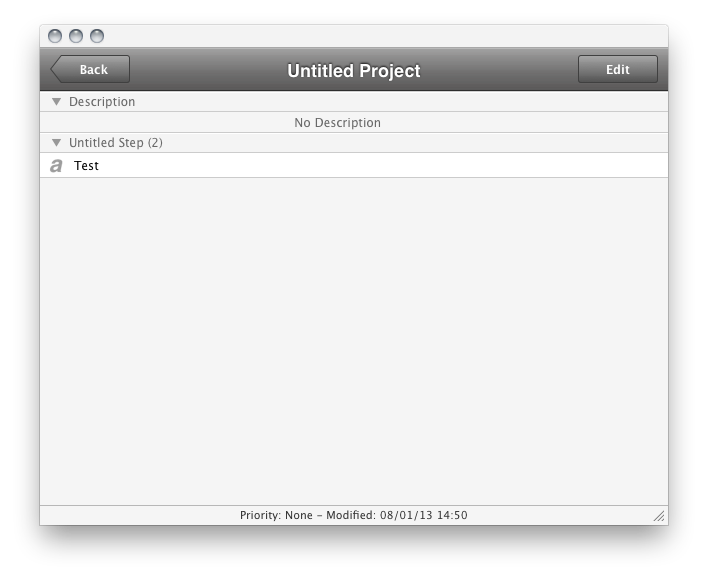

The main interface shown after the launching of Tea Box contains the list of all projetcs, grouped by priority.
Use the New button or File > New Project... (⌘ + N) to create a new project. Projects can be renamed into the project's view, accessible by clicking of the project's cell.

To add an image, some text, web link and files or folders, just drag and drop from the Finder or any application or by using
File > Import
By editing the project, you can change the name of the project, the description, the
Notes files, the name of steps and change the priority.